ECG: Measurement of heart rate and probability of heart attack#
Author : Mohammad Mahdi Khorsand Aalam
Contact : Github Page

What is an electrocardiogram?#
Electrocardiography (ECG or EKG) is a non-invasive diagnostic tool that records the heart’s electrical activity. By placing electrodes on the body’s surface, ECG provides valuable information about the heart’s rate, rhythm, and overall health. Originally invented by Einthoven in 1902 [1], ECG has become a cornerstone of cardiac diagnosis.
ECG has numerous clinical applications, including:
Diagnosis: Detecting various heart conditions such as arrhythmias, heart attacks, and cardiomyopathies [2].
Monitoring: Tracking patients on medications and those undergoing non-cardiac surgery [3].
Screening: Identifying individuals at risk of heart disease, including athletes [4].
Research: Investigating the effects of drugs on the heart [4].
Understanding ECG Components#
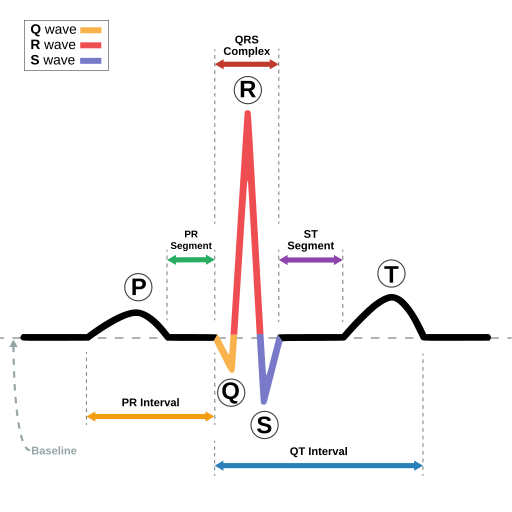
Axis
The axis refers to the net direction of electrical activity during the heart’s depolarization. It is typically expressed as an angle, with a normal range of 0° to 120°. A shift in the axis can indicate various heart conditions, such as left or right ventricular hypertrophy or bundle branch blocks.[8][9] 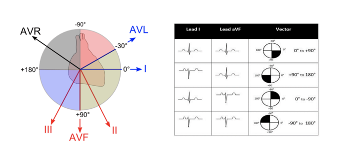
P Waves
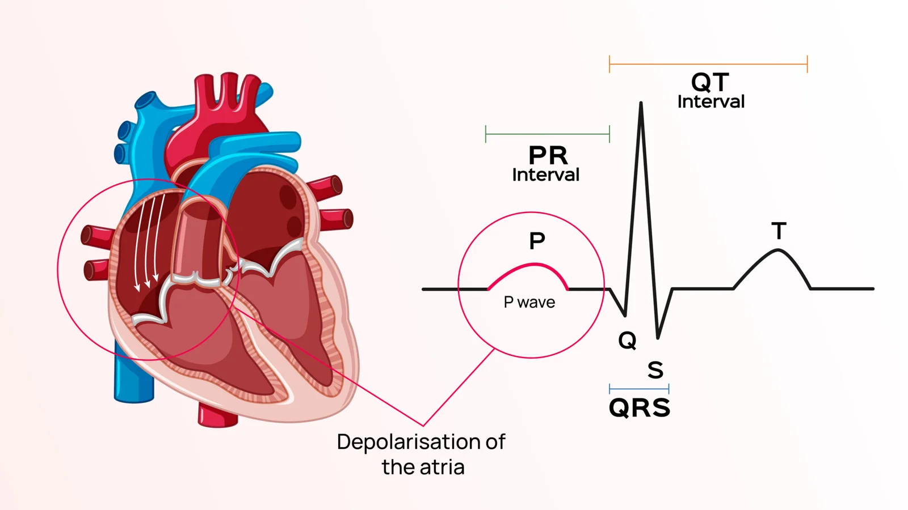 The P wave is the first positive deflection observed on an electrocardiogram (ECG). It represents the electrical depolarization of the heart’s atria, leading to their contraction. Normal P waves are typically small, rounded, and less than 120 milliseconds in duration. Abnormal P waves can indicate various atrial abnormalities, such as enlargement or fibrillation.[8][10]
Normal P Wave Size
Duration <120ms (3mm)
Amplitude <2.5mm
PR interval
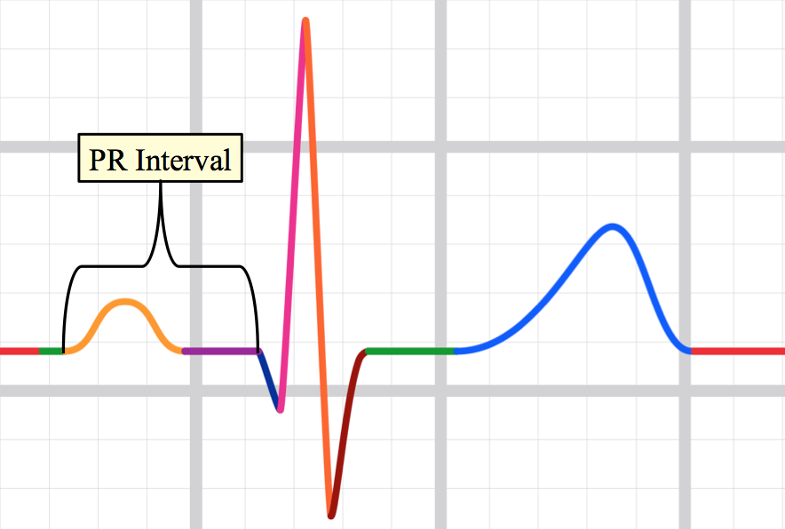 The PR interval is the time from the onset of the P wave to the start of the QRS complex. It reflects conduction through the AV node. The normal PR interval is between 120 – 200 ms (0.12-0.20s) in duration (three to five small squares).[11]
The PR interval reflects the time taken for the electrical impulse to travel from the atria to the ventricles via the AV node.
QRS Complex
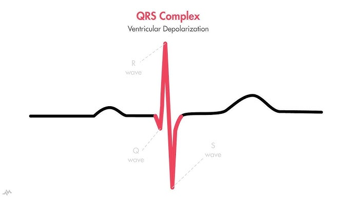 he QRS complex is the ventricular contraction (systole) consisting of the Q wave, which is the first negative deviation, followed by the R wave, a positive (upward) deviation. Any negative deflection following immediately after the R portion is termed the S wave.[12] The normal duration is 0.06 to 0.10 seconds. A widened QRS complex may suggest bundle branch block or ventricular origin of the depolarization (e.g., in ventricular tachycardia).[13]
QT Interval
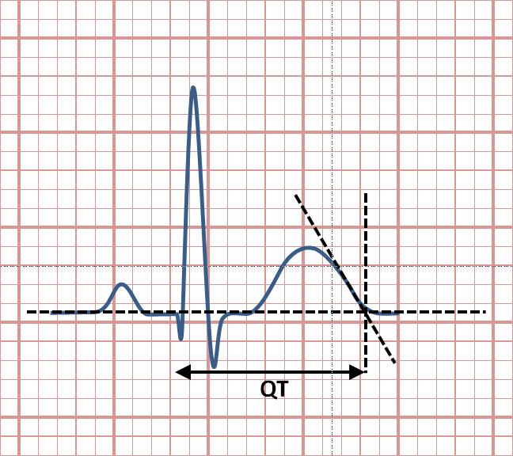
The QT interval measures the time from the start of the QRS complex to the end of the T wave. It represents the total time required for the ventricles to depolarize and repolarize. A prolonged QT interval can increase the risk of abnormal heart rhythms, such as torsade de pointes.[8][9]
The QT interval is most commonly measured in lead II for evaluation of serial ECGs, with leads I and V5 being comparable alternatives to lead II. Leads III, aVL and V1 are generally avoided for measurement of QT interval.[14]
Bazett’s formula The most commonly used QT correction formula is the Bazett’s formula,[5] named after physiologist Henry Cuthbert Bazett (1885–1950),[6] calculating the heart rate-corrected QT interval (QTcB).[15] Bazett’s formula is based on observations from a study in 1920. Bazett’s formula is often given in a form that returns QTc in dimensionally suspect units, square root of seconds. The dimensionally correct form of Bazett’s formula is: $\(QTc = QT / √RR\)$
QTc is the corrected QT interval
QT is the measured QT interval
RR is the interval between two consecutive R waves (representing one heartbeat)
Bazett’s formula Fridericia’s formula is another method for calculating the corrected QT interval (QTc) on an electrocardiogram (ECG). It is considered to be more accurate than Bazett’s formula, especially at faster heart rates. [16] $\(QTc = QT / RR^(1/3)\)$
QTc is the corrected QT interval
QT is the measured QT interval
RR is the interval between two consecutive R waves (representing one heartbeat)
ST Segment
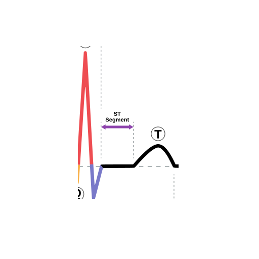
The ST segment is the flat line between the end of the QRS complex and the start of the T wave. It represents the time between ventricular depolarization and repolarization. An elevated ST segment can indicate a heart attack, while a depressed ST segment can indicate myocardial ischemia or other heart conditions.
T Waves
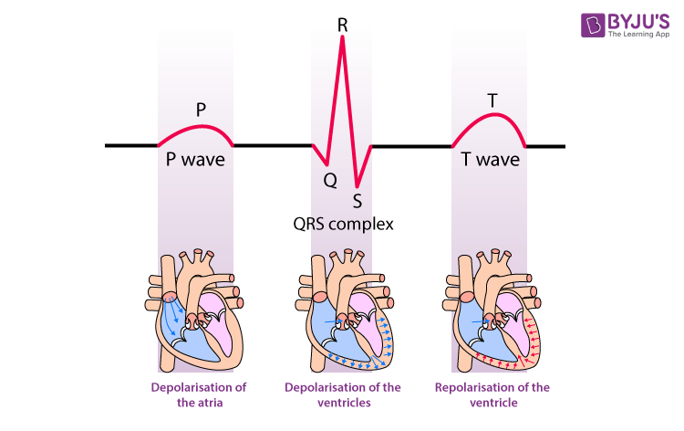
The T wave represents ventricular repolarization, the recovery phase after depolarization. It should be upright in most leads and is usually rounded and asymmetrical. Abnormal T waves can suggest myocardial ischemia, electrolyte imbalances, or other conditions.[17]
What is a heart attack?#
A heart attack is caused by a blockage in one of the vessels of the heart.
The most common ECG indicator of a heart attack is ST segment elevation, which represents the start of ventricular relaxation. ST elevation in two or more leads viewing the same heart region increases suspicion of a heart attack .[7]
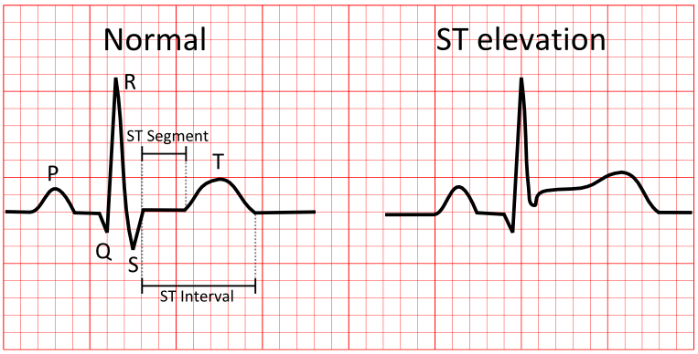
ECG changes, along with elevated troponin levels, can indicate the need for a trip to a Cath Lab to check for heart blockages. In some cases, a person with chest pain and a suspicious ECG may be sent to the Cath Lab before blood test results are available.
Heart rate#
Heart rate is the number of beats per minute, and the body adjusts it based on activity or environment. It increases during activity, excitement, or fear, and decreases when resting or calm .[5]
What is a normal adult heart rate?
Normal: 60-100 bpm
Tachycardia: > 100 bpm
Bradycardia: < 60 bpm
Regular heart rhythm
If a patient has a regular heart rhythm, their heart rate can be calculated using the following method:
Simply identify two consecutive R waves and count the number of large squares between them. By dividing this number into 300 (remember, this number represents 1 minute) we are able to calculate a person’s heart rate.[6]
Rate = 300 / number of large squares between consecutive R waves.[6]
Count the number of large squares present within one R-R interval.
Divide 300 by this number to calculate heart rate.
Heart rate calculation example 4 large squares in an R-R interval 300/4 = 75 beats per minute 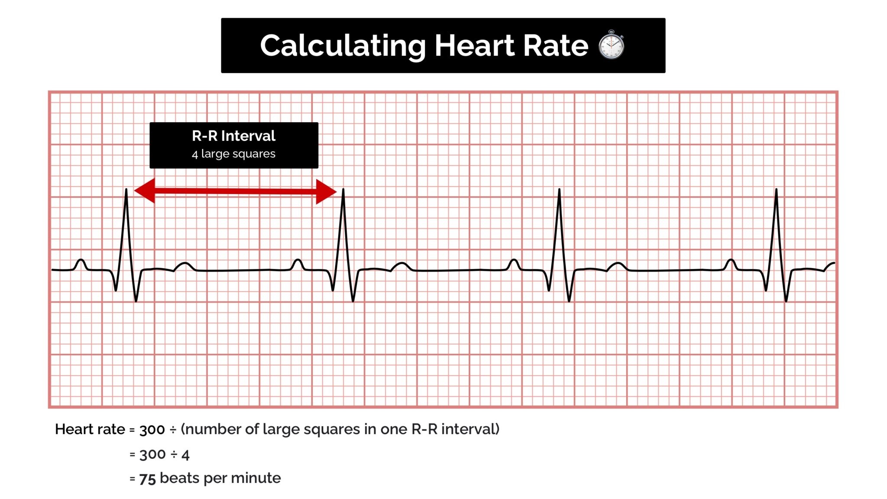
Measurement of heart rate and probability of heart attack#
In this project, we want to measure and predict the probability of heart attack and heart rate based on ECG signals.
Dataset In this project, I use the data of MIT-BIH Arrhythmia Database, which is a data with a free use license. MIT-BIH Arrhythmia Database Link
Libraries
wfdb This library allows you to load and manipulate ECG data files stored in a specific format commonly used in research (WFDB format).
scipy.signal (find_peaks) This function helps identify peaks (highest points) in the ECG signal, which are crucial for heart rate calculation.
matplotlib.pyplot (plt) This library is used to create visualizations like plots of the ECG signal.
numpy (np) This library provides powerful numerical computing functionalities used for calculations throughout the code.
Function Definitions:#
1- detect_heart_rate(ecg_signal, sampling_rate)#
This function calculates the heart rate from the ECG signal.
def detect_heart_rate(ecg_signal, sampling_rate):
peaks, _ = find_peaks(ecg_signal, height=np.mean(ecg_signal), distance=sampling_rate/2.5)
rr_intervals = np.diff(peaks) / sampling_rate
heart_rate = 60 / np.mean(rr_intervals)
return heart_rate, peaks
R-Peak Detection: Uses find_peaks to identify R peaks, which correspond to the QRS complex (ventricular depolarization).
Sets a peak height threshold (height=np.mean(ecg_signal)) to filter out small fluctuations.
Defines a minimum distance between peaks (distance=sampling_rate/2.5) to avoid detecting multiplepeaks from the same QRS complex.
2- detect_heart_attack(ecg_signal, sampling_rate)#
This Python function, detect_heart_attack (ecg_signal, sampling_rate), identifies potential signs of heart attack by detecting ST-segment abnormalities (elevation or depression) in an ECG signal.
def detect_heart_attack(ecg_signal, sampling_rate):
st_segment_detected = False
st_window_start = int(0.08 * sampling_rate)
st_window_end = int(0.12 * sampling_rate)
st_elevations = []
_, r_peaks = detect_heart_rate(ecg_signal, sampling_rate)
for r_peak in r_peaks:
st_segment = ecg_signal[r_peak + st_window_start : r_peak + st_window_end]
if len(st_segment) > 0:
st_elevation = np.mean(st_segment) - np.mean(ecg_signal[:r_peak])
st_elevations.append(st_elevation)
avg_st_elevation = np.mean(st_elevations)
if avg_st_elevation > 0.1:
st_segment_detected = True
print(f"Possible ST-segment elevation detected: {avg_st_elevation:.3f} mV")
elif avg_st_elevation < -0.1:
st_segment_detected = True
print(f"Possible ST-segment depression detected: {avg_st_elevation:.3f} mV")
return st_segment_detected
ST Segment Window: Defines start and end of the ST-segment window relative to each R-peak (0.08s - 0.12s post R-peak).
R-Peak Detection: Uses the detect_heart_rate function to detect R-peaks in the ECG signal.
ST-Segment Analysis: For each R-peak, extracts the corresponding ST-segment and calculates the ST-segment elevation by comparingits average amplitude to the baseline (mean of the signal before the R-peak).
Abnormality Detection: If average ST-segment elevation > 0.1 mV, it’s flagged as potential ST-segment elevation (possible heartattack). If average ST-segment deviation < -0.1 mV, it’s flagged as ST-segment depression.
3- visualize_ecg(ecg_signal, sampling_rate, peaks=None)#
This function generates a visualization of the ECG signal.
def visualize_ecg(ecg_signal, sampling_rate, peaks=None):
time = np.linspace(0, len(ecg_signal) / sampling_rate, len(ecg_signal))
plt.figure(figsize=(10, 6))
plt.plot(time, ecg_signal, label="ECG Signal", color='blue')
if peaks is not None:
plt.plot(time[peaks], ecg_signal[peaks], 'rx', label='R-peaks')
plt.title("ECG Signal with Detected R-Peaks")
plt.xlabel("Time (s)")
plt.ylabel("Amplitude (mV)")
plt.legend()
plt.grid(True)
plt.show()
Time Range: Calculates the start and end samples based on the start_time and duration parameters.
Time Axis: Creates a time axis for the plot using np.linspace based on the signal’s length and sampling rate.
R-Peak Visualization: If R-peaks are provided, marks them on the plot with red “x” symbols.
Customization: Adds titles, axis labels, gridlines, and a legend to the plot for clarity.
Plotting the ECG Signal:
Plots the ECG signal (amplitude in mV) over time (seconds).
Labels the ECG signal as “ECG Signal”.
note#
Before running the code, please install the required module using the command below and make sure your computer is connected to the Internet.
# install the module
!pip install wfdb
^C
import wfdb
import numpy as np
import matplotlib.pyplot as plt
from scipy.signal import find_peaks
def detect_heart_rate(ecg_signal, sampling_rate):
peaks, _ = find_peaks(ecg_signal, height=np.mean(ecg_signal), distance=sampling_rate/2.5)
rr_intervals = np.diff(peaks) / sampling_rate
heart_rate = 60 / np.mean(rr_intervals)
return heart_rate, peaks
def detect_heart_attack(ecg_signal, sampling_rate):
st_segment_detected = False
st_window_start = int(0.08 * sampling_rate)
st_window_end = int(0.12 * sampling_rate)
st_elevations = []
_, r_peaks = detect_heart_rate(ecg_signal, sampling_rate)
for r_peak in r_peaks:
st_segment = ecg_signal[r_peak + st_window_start : r_peak + st_window_end]
if len(st_segment) > 0:
st_elevation = np.mean(st_segment) - np.mean(ecg_signal[:r_peak])
st_elevations.append(st_elevation)
avg_st_elevation = np.mean(st_elevations)
if avg_st_elevation > 0.1:
st_segment_detected = True
print(f"Possible ST-segment elevation detected: {avg_st_elevation:.3f} mV")
elif avg_st_elevation < -0.1:
st_segment_detected = True
print(f"Possible ST-segment depression detected: {avg_st_elevation:.3f} mV")
return st_segment_detected
def visualize_ecg(ecg_signal, sampling_rate, peaks=None, start_time=0, duration=10):
start_sample = int(start_time * sampling_rate)
end_sample = int((start_time + duration) * sampling_rate)
time = np.linspace(start_time, start_time + duration, end_sample - start_sample)
plt.figure(figsize=(15, 6))
plt.plot(time, ecg_signal[start_sample:end_sample], label="ECG Signal", color='blue')
if peaks is not None:
peaks_in_range = [p for p in peaks if start_sample <= p < end_sample]
peaks_in_range = np.array(peaks_in_range)
plt.plot(time[peaks_in_range - start_sample], ecg_signal[peaks_in_range], 'rx', label='R-peaks')
plt.title(f"ECG Signal with Detected R-Peaks (Time: {start_time}-{start_time + duration} s)")
plt.xlabel("Time (s)")
plt.ylabel("Amplitude (mV)")
plt.legend()
plt.grid(True)
plt.show()
def display_raw_data(record, start_time=0, duration=10):
sampling_rate = record.fs
start_sample = int(start_time * sampling_rate)
end_sample = int((start_time + duration) * sampling_rate)
time = np.linspace(start_time, start_time + duration, end_sample - start_sample)
plt.figure(figsize=(15, 4))
plt.plot(time, record.p_signal[start_sample:end_sample, 0], label="Lead 1")
plt.title(f"Raw ECG Data (Time: {start_time}-{start_time + duration} s)")
plt.xlabel("Time (s)")
plt.ylabel("Amplitude")
plt.legend()
plt.grid(True)
plt.show()
if __name__ == "__main__":
record_list = ['100', '101', '102', '103']
for record_name in record_list:
print(f"\nProcessing ECG record: {record_name}")
record = wfdb.rdrecord(record_name)
ecg_signal = record.p_signal[:,0]
sampling_rate = record.fs
display_raw_data(record, start_time=0, duration=10)
heart_rate, r_peaks = detect_heart_rate(ecg_signal, sampling_rate)
print(f"Detected Heart Rate: {heart_rate:.2f} bpm")
st_segment_detected = detect_heart_attack(ecg_signal, sampling_rate)
if st_segment_detected:
print("Warning: Possible heart attack (ST-segment abnormality) detected!")
else:
print("No significant ST-segment abnormality detected.")
visualize_ecg(ecg_signal, sampling_rate, peaks=r_peaks, start_time=0, duration=10)
Processing ECG record: 100
Detected Heart Rate: 99.37 bpm
No significant ST-segment abnormality detected.

Processing ECG record: 101

Detected Heart Rate: 82.29 bpm
No significant ST-segment abnormality detected.
Processing ECG record: 102
Detected Heart Rate: 117.05 bpm
No significant ST-segment abnormality detected.

Processing ECG record: 103
Detected Heart Rate: 103.91 bpm
Possible ST-segment depression detected: -0.135 mV
Warning: Possible heart attack (ST-segment abnormality) detected!
Output#
Raw ECG Data Plot#
This plot displays the raw ECG signal for the specified duration (default: first 10 seconds). The X-axis represents time in seconds, and the Y-axis represents the electrical signal of the heart in millivolts (mV). Important features of the ECG signal, such as P waves, QRS complexes, and T waves, can be observed in this plot.
ECG Signal with Detected R-Peaks#
This plot shows the ECG signal along with the detected R-peaks (red crosses). The X-axis represents time in seconds, and the Y-axis represents the heart’s electrical signal in millivolts (mV). The red crosses indicate the R-peaks of the QRS complex, which are used to calculate the heart rate. This visualization helps in confirming the accuracy of R-peak detection and understanding the heart’s rhythm.
Output for the first data#

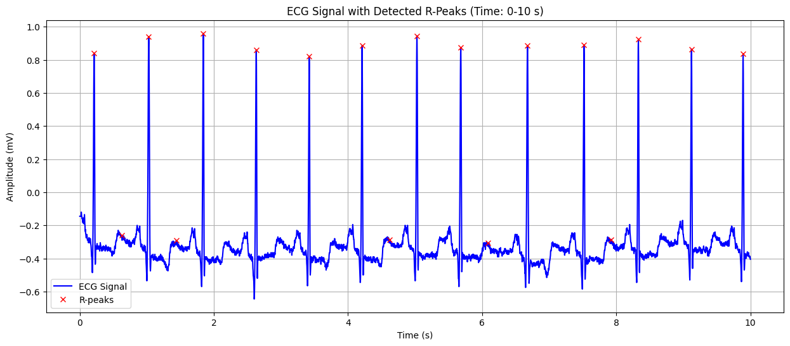
Detected Heart Rate: 99.37 bpm No significant ST-segment abnormality detected.
Output for the second data#
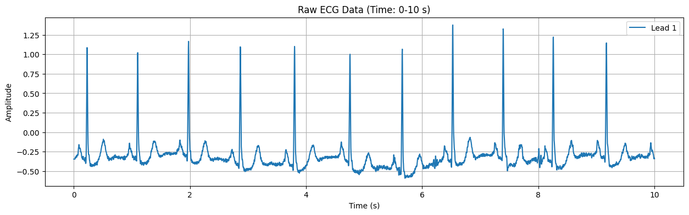

Detected Heart Rate: 82.29 bpm No significant ST-segment abnormality detected.
Output for the third data#

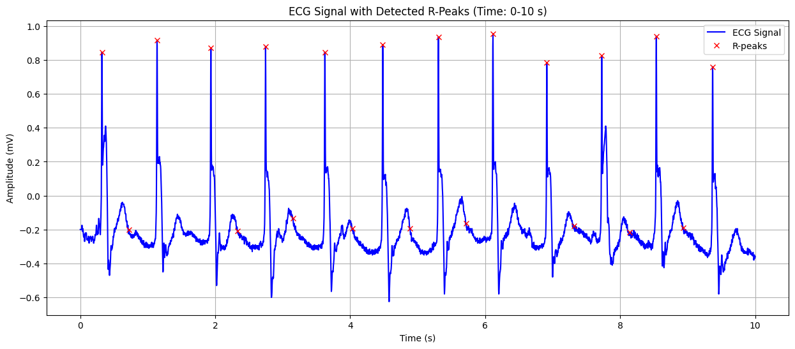
Detected Heart Rate: 117.05 bpm No significant ST-segment abnormality detected.
Output for the fourth data#


Detected Heart Rate: 103.91 bpm Possible ST-segment depression detected: -0.135 mV Warning: Possible heart attack (ST-segment abnormality) detected!
References#
1. Krikler DM. Historical aspects of electrocardiography. Cardiol Clin. 1987 Aug;5(3):349-55. PubMed
2. https://www.hopkinsmedicine.org/health/treatment-tests-and-therapies/electrocardiogram
3. Fye WB. A history of the origin, evolution, and impact of electrocardiography. Am J Cardiol. 1994 May 15;73(13):937-49. PubMed
4. Rundo F, Conoci S, Ortis A, Battiato S. An Advanced Bio-Inspired PhotoPlethysmoGraphy (PPG) and ECG Pattern Recognition System for Medical Assessment. Sensors (Basel). 2018 Jan 30;18(2) PubMed
5. Zhang GQ, Zhang W (2009). “Heart rate, lifespan, and mortality risk”. Ageing Research Reviews. 8 (1)PubMed
6. https://geekymedics.com/what-is-cardiac-axis/
7. https://seermedical.com/blog/calculate-heart-rate-ecg
8. Goldberger, A. L. (2012). Clinical Electrocardiography: A Simplified Interpretation. Mosby Elsevier. elsevier
9. Braunwald, E., & Bonow, R. O. (2018). Braunwald’s Heart Disease: A Textbook of Cardiovascular Medicine. Elsevier.elsevier
10. https://sunfox.in/blogs/p-wave-ecg-abnormalities-and-their-role-in-cardiac-wellness/
11. https://litfl.com/pr-interval-ecg-library/
12. https://www.sciencedirect.com/topics/biochemistry-genetics-and-molecular-biology/qrs-complex
13. Harrison’s Principles of Internal Medicine (20th edition), Chapter on Cardiac Electrophysiology.
14. Panicker GK, Salvi V, Karnad DR, Chakraborty S, Manohar D, Lokhandwala Y, Kothari S (2014). “Drug-induced QT prolongation when QT interval is measured in each of the 12 ECG leads in men and women in a thorough QT study”. Journal of Electrocardiology. 47 (2): 155–157.
15. Bazett HC (1920). “An analysis of the time-relations of electrocardiograms”. Heart (7): 353–370.
16. Fridericia LS (1920). “The duration of systole in the electrocardiogram of normal subjects and of patients with heart disease”. Acta Medica Scandinavica (53): 469–486.
17. Dubin’s Rapid Interpretation of EKG’s (6th edition), Chapter on T Wave Changes.